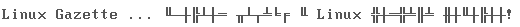
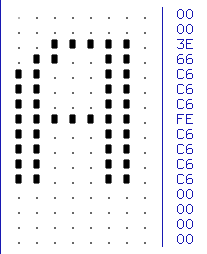
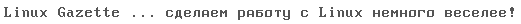

Введение.
Всем привет! Перед тем, как начать вас "грузить", хочу сказать несколько
слов о причинах, заставивших меня "засорять" ваши, и без того переполненные
информацией, мозги. Их несколько:
Причина первая: если взглянуть на переводы, публикуемые в
Russian Linux Gazette, то вы не встретите там материалов, посвящённых
программированию на ассемблере.[1] Причина очевидна: основной конёк
Linux и свободного софта -- переносимость. А вы где-нибудь видели
программу на ассемблере в стандарте POSIX? Нет? Я тоже. Я не призываю
вас переписывать "сишный" код на ассемблере для повышения быстродействия
. Зачем? Время "героев-одиночек", сидевших и "вылизывавших" по нескольку
часов десяток строк кода на "асме", давно прошло. Теперь время глобализации
и интеграции. К тому же, бывает дешевле модернизировать "железо" (закон Мура
пока ещё никто не отменял), чем потратиться на переписывание программ.
Причина вторая: статья "Пишем
игрушечную ОС", автор R. Krishnakumar. Неплохо, но маловато (надеюсь,
что пока), так ... "на один зубок".
Причина третья (основная): эта тема мне немного знакома.
То, что предлагает в своей статье R. Krishnakumar очень интересно,
и я с нетерпением жду продолжения (и как читатель, и как переводчик).
Мы воспользуемся его идеей, но пойдём в другую сторону -- мы не будем
создавать самодостаточный (подобный ОС) код, мы напишем код, который
выдаст на экран сообщение "Linux Gazette ... сделаем работу с Linux
немного веселее!"[2] и будет ждать до тех пор, пока вы
не нажмёте клавишу пробел и выполнит в конце то, что должен был сделать
BIOS[3] -- загрузит MBR[4] в ОЗУ и передаст ему управление.
Пример простой и незатейливый, но в нём используются основные возможности
компьютера, которые уже доступны перед загрузкой ОС (или после работы
POST[5] , кому как больше нравиться).
Немного теории.
То, что относится к общим принципам загрузки, описано в статье "Пишем
игрушечную ОС" (раздел 1.2 "Наша роль."), поэтому повторяться не имеет
смысла. На чём следует остановить своё внимание, так это на списке доступных
в этот момент прерываний[6]
. Прерывания (interrupts) являются одним из краеугольных камней функционирования
ПК. Это набор подпрограмм, "прошитых" в BIOS'е и отвечающих за работу
переферии. Например, прерывание 0x13 реализует дисковые операции, 0x10
работу с видеоадаптером, 0x16 работу с клавиатурой (пользовательский
уровень, т.к. существует ещё прерывание 0x9), 0x8 -- обработка таймера
(автоматически вызывается каждые 1/18.2 секунды) и т.д. При этом физически
эти подпрограммы расположены не только на материнской плате: например,
та часть BIOS'а, что отвечает за работу с видео находится на видеокарте.
Вызов нужной функции прерывания осуществляется при помощи указания определённых
значений в регистрах процессора. Например, поместив в регистр AH значение
0x0 и вызвав прерывание работы с клавиатурой (int 0x16), мы заставим
компьютер ожидать нажатия любой клавиши. За исключением Shift, Ctrl
и подобных им -- эти обрабатываются иначе.
Итак, прерывания. В отличие от примера в статье "Пишем игрушечную
ОС", мы не будем писать напрямую в видеопамять, -- этим займётся соответствующая
функция прерывания 0x10. Кроме этого, мы воспользуемся ещё двумя прерываниями:
одно будет обрабатывать ввод с клавиатуры (0x16), другое -- выполнять
дисковые операции (0x13).
Делай как я.
Старый как мир (и очень действенный) принцип обучения, поэтому не будем
нарушать традиций.[7]
Я бы предложил вам самим набрать показанный ниже пример -- всё-таки
развивает моторную память и прочее. Будет время, можете сделать это,
но если честно, то я один раз нарвался на очень странное поведение as86
-- он отказывался компилировать программу на "ровном месте". Код не
вызывал подозрений, всё было правильно. Я заремил этот участок, после
чего as86 собрал всё нормально. Убрал комментарии -- опять сообщение
об ошибке. В конце концов, я перенабрал заново весь этот участок, добавляя
по одной команде и проверяя собирается ли объектный файл или нет. Как
ни странно, но код выглядел также как и до этого. В чём проблема я так
и не понял, возможно знаки табуляции не понравились или что-то ещё.
К сожалению, предыдущий вариант в неподдающемся компиляции виде я не
сохранил, чтобы их сравнить. (Была такая классная хохма в старину: поскольку
подавляющая часть autoexec.bat'ов заканчивалось строкой nc, то для общего
развития непосвященных n ставилась латинская, а c -- кириллическое.
Прим.редак.).
Итак, вот этот код:
entry _start
_start:
;--------------------------------------------------------------------------
; настраиваем регистры, перносим код в другое адресное пространство
;--------------------------------------------------------------------------
cli ; Запретить прерывания
xor ax,ax ; Инициализируем следующие
mov ss,ax ; регистры:
mov sp,#0x7C00 ; ax = 0
mov si,sp ; sp = 0x7C00h
push ax ; si = 0x7C00h
pop es ; es = 0
push ax ; ss = 0
pop ds ; ds = 0
sti ; Разрешить прерывания
cld ; Установить repne по возрастанию
mov di,#0x600 ; di = 0x600
mov cx,#0x100 ; cx = 0x100
repne ; Переслать 512 байт в 0:0x600
movsw ; эта пересылка кода нужна, т.к. по этому
; адресу будет грузится mbr
mov ax,#_done ; Это странное преобразование
add ax,#0x600 ; нужно только для того, чтобы
push ax ; продожить выполнение программы,
ret ; но уже по адресу (0x600 + _done)
;--------------------------------------------------------------------------
; новая точка входа уже по адресу (0x600 + _done)
; настройка изображеныя, вывод сообщения на экран, ожидание нажатия
; клавиши пробел
;--------------------------------------------------------------------------
_done:
mov ax,#0x0003 ; установить текстовый режим 80x25
int 0x10 ; одновременно это приводит к очистке экрана
mov ah,#1 ; делаем невидимым курсор
mov cx,#0x2000
int 0x10
mov si,#msg_hello + 0x600 ; выводим сообщение на экран
call show_str
press_key:
mov ah,#0 ; вызывать прерывание обработки
int 0x16 ; ввода данных с клавиатуры
cmp ah,#0x39 ; это скан-код пробела?
je load_mbr ; если да, то переходим к загрузке
jmp press_key ; иначе, ждём следующего нажатия
;--------------------------------------------------------------------------
; загрузка кода mbr жёсткого диска (master::ide0) по адресу 0:0x7c00
;--------------------------------------------------------------------------
load_mbr:
mov ah,#0x02 ; 0x02 - функция чтения с диска
mov al,#0x01 ; 0x01 - кол-во считываемых секторов
mov bx,#0x7c00 ; es:bx - адрес буфера для операции чтения
mov ch,#0x00 ; 0x00 - номер дорожки (цилиндра)
mov cl,#0x01 ; 0x1 - номер стартового сектора
mov dh,#0 ; номер головки чтения/записи
mov dl,#0x80 ; 0x80 - номер диска (master::ide0)
int 0x13
jmp far 0:0x7c00 ; Передаем управление
загруженному коду
msg_hello:
.byte 13,10
.ascii "Linux Gazette ... сделаем работу с Linux немного веселее!"
.byte 13,10
.byte 0
show_str:
lodsb ; вывод сообщения на экран
cmp al,#0x00 ; в режиме телетайпа
je end_show_str ; переход, если конец
; сообщения
push si ; запоминаем указатель
mov bx,#7
mov ah,#0x0e
int 0x10 ; вывод на экран
pop si ; восстанавливаем указатель
jmp show_str ; продолжаем вывод сообщения
end_show_str:
ret
На мой взгляд, комментариев достаточно для того, чтобы понять кто
и что делает. Если хотите посмотреть всё в действии, возьмите здесь тарбол. В нём вы найдёте скрипт, компилирующий
наш пример и записывающий его на дискету (не забудьте вставить её
в дисковод и, если у вас нет прав на запись в /dev/fd0, позаботиться
об этом тоже). После того как, код загрузится с дискеты вы увидите
на экране следующую фразу:

Опс! Маленькая неувязочка. Как я уже говорил ранее, практически ни
одна видеокарта не содержит в прошивке знакогенератора кириллические
шрифты. Что делать? А сделать надо вот что: загрузить в знакогенератор
таблицу, которая содержит нужные нам символы. У прерывания 0x10 есть
такая функция. К сожалению в официальном мануале от
Phoenix Technologies Ltd., описывающем доступные прерывания на этапе
загрузки, об этом не сказано ни слова. Эту информацию можно найти,
либо в Tech Help по MS DOS, либо в Norton Guides.
Так что же это за таблица (иногда её называют матрицей или битовой
картой), описывающая символы в знакогенераторе? Возьмем на рассмотрение
шрифт 8 на 16 (8 точек по ширине, 16 по высоте). Чтобы вывести на
экран букву "А" (большая, русская), знакогенератор должен знать, в
каком месте он обязан нарисовать точку, а в каком сделать пропуск.
Посмотрите на рисунок (часть скриншота из редактора консольных шрифтов
cfe). Как видите, формирование
буквы "А" описывается при помощи битовых последовательностей. При
этом, один байт (8 бит) описывает одну строчку, а всего их 16. Если
бы мы имели дело со шрифтом 8 на 14 или 8 на 8, то описание одного
символа для знакогенератора занимало бы 14 или 8 байт, соответственно.
Обратите внимание на столбец чисел в шестнадцатеричной кодировке на
скриншоте. Это и есть те битовые последовательности. Если вам ещё
не совсем понятно как они образуются, то возьмём для примера третью
строку сверху: код -- 0x3e и переведём его в двоичную форму 00111110.
Получается, что 0x3 -- это 0011, а 0xe -- 1110. Построение кода ведётся
справа налево, вот и получается 0x3e.

Надеюсь, не слишком запутанно? Хорошо, пойдём дальше. Мы можем изменить
начертание любого символа или последовательности символов за один
раз. В нашем случае заменим всю таблицу знакогенератора для символов
8x16 (все 256 символов). Для этого нам нужен файл шрифтов для консоли
с разрешением 8 на 16 в кодировке koi8-r. Такой мы можем найти в каталоге
/usr/lib/kbd/consolefonts. Файл, который нас интересует -- koi8-8x16.psf.gz.
Он имеет немного другой формат, но достать оттуда битовую карту символов
несложно: нужно скопировать из него 4096 байт (256*16), отбросив первые
четыре, которые являются сигнатурой psf-файла. Для этого можно воспользоваться
программой dd (не забудьте распаковать его -- gzip -d koi8-8x16.psf.gz):
#!/bin/bash
dd if=koi8-8x16.psf of=koi8-8x16.fnt bs=1 skip=4 count=4096
В конец нашего примера, описанного выше, нужно добавить следующую
подпрограмму:
;--------------------------------------------------------------------------
; настройка знакогенератора
;--------------------------------------------------------------------------
setup_font:
mov ah,#0x02 ; 0x02 - функция чтения с диска
mov al,#0x08 ; 0x08 - кол-во считываемых секторов
; 8*512=4096 байт; учтите, что кол-во
; секторов в сумме не больше, чем
; один цилиндр
mov bx,#0x1000 ; es:bx - адрес буфера для операции чтения
mov ch,#0x00 ; 0x00 - номер дорожки (цилиндра)
mov cl,#0x02 ; 0x1 - номер стартового сектора
mov dh,#0x00 ; номер головки чтения/записи
mov dl,#0x00 ; 0x00 - номер диска (fd0)
int 0x13
mov bp,bx ; es:bp указывает на новую таблицу
mov ah,#0x11 ; 0x11 - функция генерации символов
mov al,#0x00 ; подфункция 0x00 - загрузить
; пользовательский шрифт для текстового
; режима
mov cx,#0xff ; 0xff - число изменяемых символов
mov dx,#0x00 ; 0x00 - изменить кодировку начиная
; с ascii-кода символа
mov bh,#0x10 ; 0x10 - число байт в образце символа
mov bl,#0x00
int 0x10
ret
Кроме этого, перед вызовом подпрограммы show_str, нужно добавить
вызов подпрограммы setup_font:
call setup_font
Теперь, кроме записи в первый (boot) сектор дискеты, мы должны записать
в 8-м следующих за ним секторов файл со шрифтом (koi8-8x16.fnt), который
будет использовать подпрограмма setup_font. Здесь вы найдёте тарбол с окончательным вариантом
нашей программы. Там же находятся файл со шрифтом и скрипт, который
всё это собирает и записывает на дискету. А загрузившись с неё, вы
сможете увидеть на экране фразу:

Надеюсь, мне это хоть немного удалось.
Сноски.
|